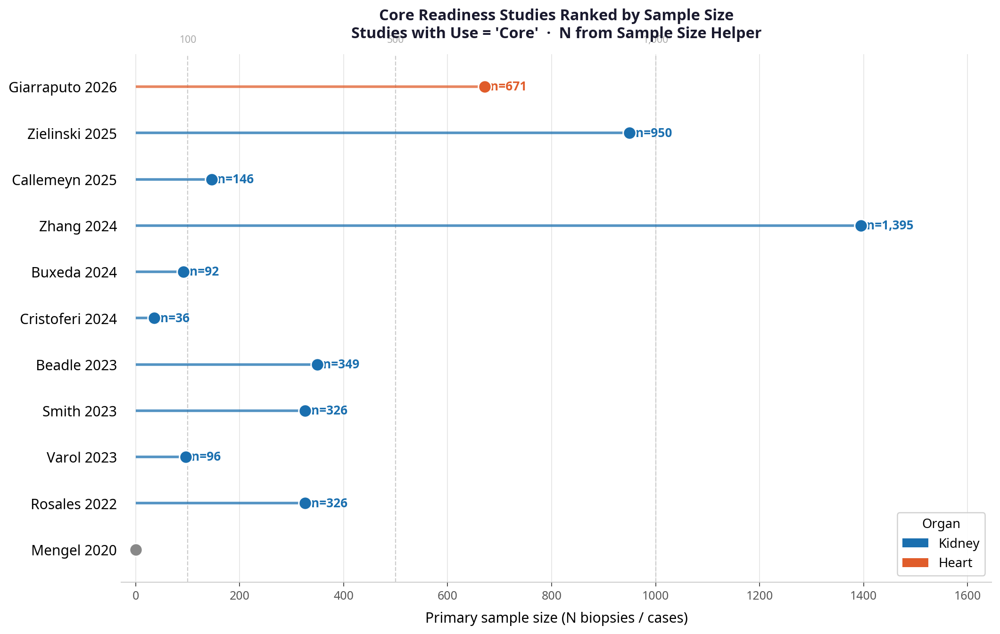

Evidence Map by Year, Organ & Role in Review
Landscape overviewDescription
Each bubble represents one included study, positioned by publication year (x-axis) and organ (y-axis). Bubble colour encodes the study's role in the review: blue = Core, amber = Support citation, green = Discussion only. All bubbles are uniform in size so that colour is the sole visual variable. Hover over any bubble to see the first author, organ, sample size, and title.
Conclusion
The evidence base is temporally mature for kidney and nascent for all other organs. The 2023–2026 emergence of non-kidney Core and Support studies signals a field in active expansion, but the density asymmetry justifies a kidney-first framing of clinical readiness.
Distribution by Primary Manuscript Use-Case
Evidence architectureDescription
A stacked horizontal bar chart showing how the 33 included studies distribute across the six primary manuscript sections. Each bar is subdivided by role in review (Core / Support citation / Discussion only), giving an immediate map of the evidence architecture.
| Section | Core | Support | Disc. | n |
|---|---|---|---|---|
| Foundational / Rationale | 2 | 0 | 0 | 2 |
| Core kidney readiness | 7 | 2 | 0 | 9 |
| Cross-organ / cross-context | 2 | 2 | 2 | 6 |
| Bridge to next-gen | 0 | 2 | 0 | 2 |
| Challenges / Limitations | 2 | 3 | 2 | 7 |
| Background / Commentary | 0 | 0 | 5 | 5 |
Conclusion
Core kidney readiness (n=9, almost entirely blue) is the evidentiary backbone. Challenges / Limitations (n=7) is predominantly amber, showing that limitations are acknowledged through secondary evidence. Background / Commentary (n=5) is entirely green — contextual framing only. The mixed colour profile of Cross-organ / cross-context reflects its position as an emerging, multi-tier area.
Core Readiness Studies Ranked by Sample Size
Statistical weight
Description
A lollipop plot of all 13 Core studies, ranked by primary sample size (N biopsies or cases). Bar and dot colour encodes organ: blue = Kidney, orange = Heart, green = Uterus, purple = Solid Organ. Studies with no reported N are shown as a diamond at the origin.
| Study | Organ | N |
|---|---|---|
| Zhang 2024 | Kidney | 1,395 |
| Zielinski 2025 | Kidney | 950 |
| Giarraputo 2026 | Heart | 671 |
| Beadle 2023 | Kidney | 349 |
| Smith 2023 | Kidney | 326 |
| Rosales 2022 | Kidney | 326 |
| Callemeyn 2025 | Kidney | 146 |
| Broecker 2025 | Uterus | 99 |
| Varol 2023 | Kidney | 96 |
| Buxeda 2024 | Kidney | 92 |
| Cristoferi 2024 | Kidney | 36 |
| Eder 1 2025 | Kidney | 25 |
| Mengel 2020 | Solid Organ | N/A |
Conclusion
Zhang, Zielinski, and Giarraputo 2026 carry the most statistical weight — together accounting for over 3,000 biopsies. Giarraputo 2026 (Heart, n=671) is the third largest Core study overall, making the cross-organ "prime time" argument visually concrete. The 9:1:1 kidney-to-heart-to-uterus split reinforces the kidney-first readiness narrative.
Study Design Heatmap
Methodological diversityDescription
A heatmap with Organ on the y-axis and Study Design category on the x-axis. Cell colour intensity is proportional to the number of studies in that cell; white cells indicate no studies. Row and column totals are shown as marginal annotations. Hover over any cell to see the individual study list.
Design categories were derived from Document Type, Original Research flag, Retro/Prospective flags, Archival FFPE flag, and Method free-text.
Conclusion
The design heatmap reveals that kidney's readiness advantage is not only about study count but also about methodological breadth — it has been tested prospectively, retrospectively (FFPE and non-FFPE), computationally, and in case series. Non-kidney organs are confined to a single design type each, which limits the generalisability of their findings at this stage.